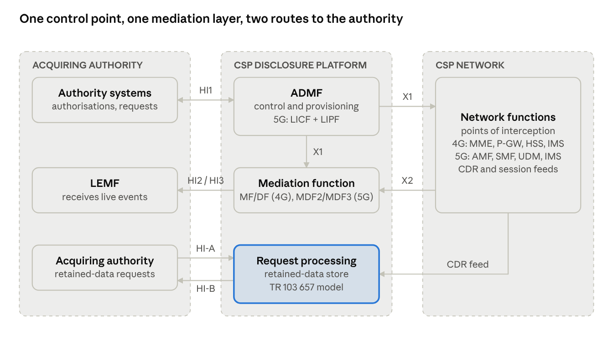
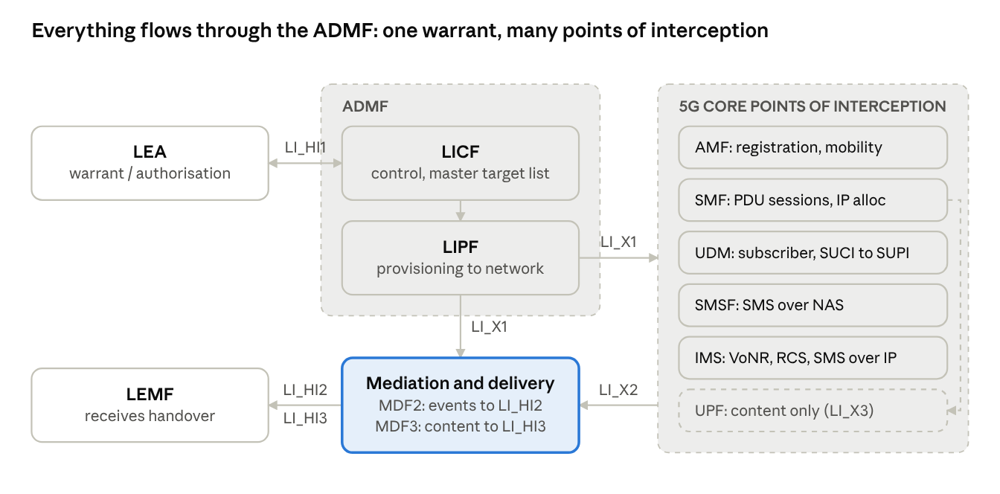

1. Purpose, scope and how to use this document
This is a governance-level abridgement of the ETSI and 3GPP standards that shape how communications data is generated, retained, requested and disclosed in 4G (EPS/LTE) and 5G (5GS) networks. It is written for someone governing the design of CDA solutions on the CSP/operator disclosure side, and the interface and assurance between CSP and acquiring authority, rather than for a protocol engineer.
In scope
- The ETSI TC LI family for retained data and lawful disclosure: TS 102 657, TS 103 120, TS 103 705, TS 103 280, TS 103 307.
- The 3GPP SA3-LI family that defines where communications data is produced inside 4G and 5G networks: TS 33.106/107/108 (legacy and EPS) and TS 33.126/127/128 (5GS and EPS from Release 15 on).
- The generic handover and internal-interface model (ADMF, mediation, HI1/HI2/HI3, X1/X2/X3) that both families share.
- How these map onto UK Investigatory Powers Act 2016 (IPA) communications data concepts: entity data, events data, internet connection records.
Out of scope
- Interception of content (CC/HI3) is described only where the architecture cannot be understood without it; the operational detail of content handover is omitted.
- The acquiring authority's internal tooling and workflow.
- Circuit-switched 2G/3G handover (TS 101 671, now historical).
Reading levels. Each main section opens with a plain-language What it is paragraph, followed by What a CDA governor needs to know. Protocol specifics are compressed into Annex A (standards register) and Annex B (interface and identifier quick reference). The document is current to the specification versions published by September 2026; all specifications cited are freely downloadable from ETSI and 3GPP, and are linked in Annex A.
Terminology note. ETSI and 3GPP use Lawful Interception (LI) as the umbrella term for the whole committee's work, including retained data. Within that, Retained Data (RD) is the older term and Lawful Disclosure (LD) the newer, broader one (covering any stored business data a CSP may be lawfully required to disclose, not only CDRs and subscriber records). UK communications data acquisition sits almost entirely inside RD/LD, with one important addition: UK CDA can also be satisfied from live network events (the IRI stream), which the standards treat as LI.
2. The standards landscape — who writes what
Two bodies own the standards that matter, and the split between them is the first thing to hold in mind: ETSI TC LI standardises the handover between CSP and authority (and the CSP-internal plumbing that feeds it), while 3GPP SA3-LI standardises where inside a mobile network the data is captured and what each network function must be able to report.
What it is. ETSI's Technical Committee on Lawful Interception (TC LI) has published handover standards since the late 1990s. Its deliverables are numbered TS 10x xxx and TR 10x xxx. 3GPP's SA3-LI working group writes the mobile-specific LI specifications in the 33-series; ETSI republishes each 3GPP spec verbatim as an ETSI TS with a 133 prefix (3GPP TS 33.127 is also ETSI TS 133 127). The two families cross-reference each other: 3GPP TS 33.128 mandates ETSI TS 103 221-1/-2 for its internal X1/X2/X3 interfaces, and 3GPP TS 33.127 cites ETSI TS 103 120 for warrant administration.
| Family | Owner | What it governs | Core documents for CDA |
|---|---|---|---|
| Requirements | ETSI TC LI | What LEAs need from any handover | TS 101 331 (LI), TS 102 656 (retained data) |
| Retained data / lawful disclosure | ETSI TC LI | Request and delivery of stored data | TS 102 657, TS 103 705, TS 103 120 |
| Real-time IP handover | ETSI TC LI | HI2/HI3 delivery of live IRI and content | TS 102 232 parts 1–7, TS 103 707 |
| Internal network interfaces | ETSI TC LI | CSP-internal provisioning and capture | TS 103 221-1 (X1), TS 103 221-2 (X2/X3) |
| Common vocabulary and security | ETSI TC LI | Shared parameter formats; TLS and signing profiles | TS 103 280, TS 103 307 |
| Mobile network LI, legacy to 4G | 3GPP SA3-LI | Requirements, architecture, handover for GSM/UMTS/EPS | TS 33.106, TS 33.107, TS 33.108 |
| Mobile network LI, 5G and EPS (Rel-15+) | 3GPP SA3-LI | Requirements, architecture, stage-3 protocol | TS 33.126, TS 33.127, TS 33.128 |
| Cross-border | ETSI TC LI | LEMF-to-LEMF exchange (EIO/MLAT) | TS 103 462, TR 103 727 |
The UK context. The IPA 2016 and its Communications Data Code of Practice do not mandate any specific ETSI standard; they set out what may be acquired, by whom, and under what authorisation. The ETSI standards are the means by which a CSP and the Home Office/acquiring authorities build interoperable systems to meet those obligations. In practice, UK CDA interfaces have drawn on TS 103 120 (electronic authorisation exchange) and TS 102 657 (retained data request/response), with the newer TS 103 705 JSON structures emerging as the modern data payload. A CSP's data retention notice under IPA Part 4 defines what must be retained; TS 102 657's categories define how it is described on the wire.
What a CDA governor needs to know. When reviewing a design, ask which family each interface belongs to. An interface between CSP and acquiring authority should be traceable to a TC LI handover standard and version; an interface between a network function and the CSP's disclosure platform should be traceable to the 3GPP architecture (which function is the point of capture, which identifiers it can report) and to TS 103 221 if it is a live feed. A design that cannot name its standard and version for each boundary is not yet assurable.
3. Common reference architecture
Every ETSI and 3GPP LI/LD specification is a variation on one reference model: an administration function receives the authorisation, points of interception inside the network capture events, a mediation function normalises and delivers them, and three numbered handover interfaces carry administration, data-about-communications and content to the authority.

The upper route (HI1, X1, X2, HI2) is live interception of events; the lower route (HI-A, HI-B) is disclosure from the retained-data store, which the same network functions feed. HI3 (content) is shown only to mark the boundary.
What it is.
- HI1 (administration). Carries the warrant or authorisation from LEA to CSP and status back. Historically manual (fax, email); now electronic via ETSI TS 103 120.
- HI2 (intercept related information, IRI). Carries signalling-derived data about communications: who, when, where, which service, which identifiers. In UK terms this is the live-events route for communications data.
- HI3 (content of communication, CC). Carries the content itself. Out of scope for CDA; included here so the boundary is clear.
- HI-A / HI-B (retained data). TS 102 657 uses its own pair: HI-A for the request and administrative exchange, HI-B for delivery of retained records. Functionally HI-A parallels HI1 and HI-B parallels HI2.
- ADMF (administration function). The CSP's single point of control for all lawful-access activity. In 5G (TS 33.127) it is split into LICF (control, holds the master target list, talks to the LEA) and LIPF (provisioning, talks to the network).
- X1 / X2 / X3 (internal network interfaces). Standardised by ETSI TS 103 221-1 (X1: provisioning from ADMF to network functions) and TS 103 221-2 (X2: IRI from network function to mediation; X3: content). 3GPP prefixes them LI_X1/X2/X3.
- MF/DF, MDF2/MDF3 (mediation and delivery). Converts network-internal records (xIRI, xCC) into the handover format and delivers to the LEMF. MDF2 serves HI2, MDF3 serves HI3.
- LEMF (law enforcement monitoring facility). The receiving system on the authority side.
- Dictionary (TS 103 280). Shared type definitions (IMSI, MSISDN, SUPI, IP address, timestamp formats) used across all the above, so that the same identifier is encoded identically on every interface.
What a CDA governor needs to know.
- Retained data disclosure and live IRI are two routes to the same communications data. The retained-data route (HI-A/HI-B) answers historical questions from the CSP's data store; the IRI route (HI2) reports future events as they happen. A complete CDA capability needs both, and a design should state which route each use case relies on.
- The ADMF is the control point for auditing. Every request, provisioning action and delivery should be traceable to an authorisation held in the ADMF (or its LD equivalent, the request-processing system). Assurance questions about "who asked for what, when, under which authority" are answered here.
- Mediation is where national requirements are applied. Which parameters are included or excluded, how identifiers are formatted, how time is stamped: these are mediation- layer decisions and are the main place a UK deployment departs from the generic standard.
- Security on all of these interfaces is specified by ETSI TS 103 307 (TLS profiles, certificate handling, digital signatures). It applies to HI1/HI-A, HI2/HI-B and X1/X2/X3 alike.
4. Lawful disclosure of retained data — the CDA core
Three ETSI specifications between them define how an authority asks a CSP for stored communications data and how the CSP answers: TS 102 657 (the established request/delivery handover), TS 103 120 (electronic authorisation and request management) and TS 103 705 (modern, extensible JSON data structures for the records themselves). For UK CDA these are the standards that matter most.
4.1 ETSI TS 102 657 — Retained data handover interface
What it is. The retained-data handover specification, in continuous revision since 2008 (current major version 2.1.1, August 2023; the 1.x line ran to v1.29.1). It defines a request/response model between an Authorised Organisation and a CSP over two ports,
HI-A (requests, acknowledgements, status) and HI-B (delivery of results), with ASN.1 or XML encoding over TCP or HTTP.
Its data model is organised by category of retained data, each with its own record schema:
| Category | Typical records | 4G/5G relevance |
|---|---|---|
| Subscriber / entity | Name, address, account, identifiers held (MSISDN, IMSI, IMEI, SUPI, GPSI, SUCI mapping), service subscriptions, payment method | Entity data; 5G identifiers added in v1.26.1 |
| Telephony (fixed and mobile) | Call records: calling/called party, start/end, duration, cell at start/end, forwarding, IMEI | Events data; VoLTE/VoNR records come from IMS CDRs |
| Messaging | SMS/MMS: sender, recipient, timestamp, delivery status, serving cell | Events data; SMSF in 5G |
| Network access | Session start/end, allocated IP address and port range, APN/DNN, serving node, cell/TAI at start | Events data; basis for ICR-type records |
| Asynchronous messaging (email) | Sender, recipients, timestamps, server used | Where the CSP provides the service |
| Multimedia (IMS) | SIP-derived call and session records | Events data for VoLTE, VoWiFi, RCS |
| Location | Cell, cell site details, transmitter details | Added for 5G: transmitter and radio-capability detail |
The message flow is simple: request (with authorisation reference, requested category, search criteria and time window) → acknowledgement → one or more responses carrying records → completion status; with error and cancellation messages, and a request priority field.
What a CDA governor needs to know.
- TS 102 657 is the record schema, not the authorisation. The authorisation reference it carries should point at a TS 103 120 object (or a national equivalent). A design that embeds authorisation detail directly in the data request is mixing layers.
- Many record fields are optional and nationally profiled. The UK deployment profile (which fields a CSP must populate for each category) is a governance artefact in its own right and should be versioned alongside the standard version.
- Version drift between CSPs is normal: one CSP may deliver v1.2x records while another has moved to 2.1.1. The acquiring side must handle both; the CSP side must declare which it supports.
- Time and location semantics must be stated: UTC with offset, cell identity format (ECGI for 4G, NCGI for 5G), and whether cell site location is delivered with the record or looked up separately.
4.2 ETSI TS 103 120 — Interface for warrant information (eWarrant)
What it is. An electronic HI1 for both interception and lawful disclosure (current version 1.20.1, August 2025). It defines a small set of objects and verbs that two systems exchange over HTTP/TLS with XML or JSON: an AuthorisationObject (the legal authority: who issued it, under what power, its validity window), one or more TaskObjects (what is actually to be done: an LI task or an LD task with its targets and service scope), a DocumentObject (the signed instrument itself), a NotificationObject (status changes) and, for LD, DeliveryObject / delivery details that say where and in what format results go. Each object has a lifecycle (create, update, get, list, delete) and a status.
What a CDA governor needs to know.
- This is where UK authorisation semantics live. The IPA concepts (applicant, designated senior officer or OCDA authorising officer, statutory purpose, necessity and proportionality, time window, data type) map onto AuthorisationObject and TaskObject fields plus the specification's NationalHandlingParameters extension point. The mapping is a design decision to govern explicitly.
- TS 103 120 gives the audit trail its backbone: every LD task references an authorisation, every delivery references a task. Reconciliation (requests issued vs. results delivered vs. authorisations in force) should be designed around these object identifiers.
- The LD-specific parts are relatively recent (v1.7.1, 2020 onwards). Older CSP implementations may support only the LI objects and need extension.
4.3 ETSI TS 103 705 — Data structures for lawful disclosure
What it is. A 2024 specification (v1.2.1, December 2024) defining flexible JSON-schema record structures for lawful disclosure. It separates the description of the record set (which CSP, which data source, which fields it contains and what they mean) from the records themselves, and allows CSP-defined fields alongside standard ones. It is designed to be carried inside a TS 103 120 delivery, and to be signed (enveloped signature procedure in its Annex C). It extends the reach of lawful disclosure beyond classic CDRs to any stored business data a CSP may be required to disclose (invoices, account activity, app-level logs).
What a CDA governor needs to know.
- TS 103 705 is the direction of travel for new CDA interfaces: JSON, self-describing, signed. A new design should justify choosing TS 102 657 over it rather than the reverse.
- Self-description shifts the burden: the acquiring side can ingest records it has never seen, but only if the CSP's record-set descriptions are accurate and stable. Governance of the field dictionary becomes a live obligation on the CSP.
- Signing gives evidential integrity end to end. Decide early who holds the signing keys, how they are rotated, and how a signed record is verified years later.
4.4 Supporting specifications
- TS 102 656 — the LEA requirements that TS 102 657 implements; useful as the checklist for "is this handover complete".
- TR 103 657 — informative reference model for the CSP-internal retained-data system (collection, storage, query, delivery). The only ETSI document that describes the inside of a CSP's retained-data platform, and therefore the closest thing to an architecture pattern for the disclosure side.
- TS 103 280 — the dictionary of common parameters; the single source for identifier and timestamp formats across all of the above.
- TS 103 307 — security aspects for LI and RD interfaces: TLS 1.2/1.3 profiles, mutual authentication, certificate management, digital signatures.
- TS 103 462 — inter-LEMF handover (authority to authority) for European Investigation Orders and MLAT; relevant only where UK results are passed onward to another jurisdiction.
- TS 103 976 — lawful disclosure of vehicle-related data; an example of LD reaching non- telecoms data holders.
5. 4G / LTE (EPS) — where communications data is produced
In a 4G network the communications data that matters for CDA is produced by four core- network functions — the MME, S-GW/P-GW, HSS and (for voice and messaging) the IMS — and the 3GPP LI specifications define exactly which events each of them must be able to report.
What it is. The legacy 3GPP trilogy covers GSM, UMTS and EPS:
- TS 33.106 — stage 1 requirements (what LI must achieve).
- TS 33.107 — stage 2 architecture and functions: which network elements are Intercepting Control Elements, the X1_1 (admin), X2 (IRI) and X3 (CC) internal interfaces, and the Delivery Functions DF2/DF3.
- TS 33.108 — stage 3 handover interface: the ASN.1 definitions of the IRI records delivered over HI2 for each service, including EPS.
From Release 15 onwards, 3GPP has also folded EPS into the newer TS 33.127/33.128 (section 6), so a 4G network built or upgraded recently may implement either set. Both describe the same points of capture.
| EPS function | Role | Events it can report (IRI) | Identifiers it knows |
|---|---|---|---|
| MME | Mobility and session control for the radio side | Attach, detach, tracking area update, handover, service request, bearer activation/modification/deactivation, UE location on these events | IMSI, IMEI(SV), MSISDN, GUTI, ECGI/TAI |
| S-GW / P- GW (or combined SAEGW) | Bearer and IP session anchor | PDN connection start/end, bearer events, IP address allocation, APN, QoS changes, serving-node change; user-plane content (CC) | IMSI, IMEI, MSISDN, allocated IP addresses, APN, ULI (cell) |
| HSS | Subscriber database | Serving-system change (which MME/SGSN), subscriber record change, location-register events | IMSI, MSISDN, IMEI, subscription profile |
| IMS (P- CSCF, S- CSCF, AS) | VoLTE, VoWiFi, RCS, SMS over IMS | SIP registration, session setup/teardown, call forwarding, conference, SMS submit/deliver | IMPU (SIP URI, tel URI), IMPI, IMEI, P-Access- Network-Info (cell) |
| ePDG | Untrusted non-3GPP access (Wi-Fi calling) | Tunnel establishment/release, UE IP addresses | IMSI, UE local and tunnel IPs |
| SMS-C / IP- SM-GW | SMS | Submit, deliver, status report | MSISDN, IMSI, serving node |
What a CDA governor needs to know.
- Retained data is derived from the same events. A CSP's CDR and session-record feeds (used for billing and retention) are generated by the P-GW, MME, IMS and SMS- C from the same signalling the IRI points of interception see. When assessing a retained-data design, trace each TS 102 657 record category back to the network function that produces it and the identifier set that function actually holds. The HSS, for example, never sees a cell identity; the P-GW holds the IP allocation but only the MME holds the full mobility history.
- IP address and port allocation is the hard case. Carrier-grade NAT means a public IP address is shared by many subscribers. Resolving an IP address and timestamp to a subscriber needs the NAT logs (source port range or per-flow records) as well as the P- GW session records. ETSI TC LI has published guidance on retaining and querying IP association records; UK ICR designs depend on it.
- Location in 4G is event-driven, not continuous. The cell (ECGI) is known at attach, TAU, service request and bearer events, and at call/session start and end via IMS or the P-GW's user-location information. Between events the network knows only the tracking area. Any design claim of "location at time T" must be qualified accordingly.
- Identifier correlation is a design obligation. IMSI (subscriber), IMEI (device), MSISDN (number) and allocated IP address are held by different functions and change independently (SIM swap, new handset, number port, dynamic IP). The disclosure platform, not the network, is where these are reconciled against time.
- Roaming. For an outbound roamer the visited network's MME and S-GW hold the mobility and bearer events; the home network's P-GW (home-routed) or HSS holds only what flows through it. For inbound roamers the reverse applies. Retention obligations and what a UK CSP can actually disclose differ in each case and should be stated per record category.
6. 5G System — the 3GPP Release 15+ LI architecture
5G replaced the ad-hoc per-node LI model of 4G with a single, service-based LI architecture defined in TS 33.126 (requirements), TS 33.127 (architecture and functions, current v19.8.0, September 2026) and TS 33.128 (stage-3 protocol, v19.7.0, June 2026). The design consequences for CDA are larger than the change of generation suggests, because 5G also changed how subscribers are identified and how the core is deployed.

The LICF holds the warrant and the target list; only the LIPF touches the network, provisioning every point of interception and the mediation function over LI_X1. Events (xIRI) flow from the POIs over LI_X2 to MDF2 and out over LI_HI2. The dashed line from SMF to UPF is the LI_T3 content trigger, shown only to mark the content boundary.
What it is. The 5G LI functional entities and interfaces:
| Entity / interface | Where | Function |
|---|---|---|
| LICF | ADMF | LI Control Function: receives the warrant over LI_HI1, holds the master target list, derives provisioning instructions |
| LIPF | ADMF | LI Provisioning Function: provisions POIs, TFs and MDFs over LI_X1; the only ADMF component exposed to the network |
| IQF, IEF, ICF | ADMF / network | Identifier Query, Event and Caching Functions: resolve between SUPI, SUCI, PEI, GPSI and 5G-GUTI so a target can be identified despite identity concealment |
| SIRF | NRF | System Information Retrieval Function: lets the ADMF discover which network function instances exist, essential in a dynamically scaled core |
| IRI-POI | AMF, SMF, UDM, SMSF, PCF, NEF, IMS CSCFs, LMF, and others | Point of Interception generating xIRI (events) over LI_X2 |
| CC-POI, CC-TF | UPF (triggered by SMF) | Content capture; out of scope here |
| MDF2 / MDF3 | CSP mediation | Convert xIRI/xCC into HI2/HI3 handover records (TS 33.128 and ETSI TS 102 232 formats) and deliver to the LEMF |
| LI_X1, LI_X2, LI_X3 | Internal | Carried by ETSI TS 103 221-1 and -2 |
| LI_HI1, LI_HI2, LI_HI3 | External | Handover: TS 103 120 for HI1; TS 33.128 Annex/TS 102 232-1 framing for HI2/HI3 |
| LALS | LMF / GMLC | Lawful Access Location Services: on-demand or periodic positioning of a target beyond the cell level |
Which 5G functions produce communications data
| 5G function | Events it reports (xIRI) | Identifiers it knows |
|---|---|---|
| AMF | Registration, deregistration, location update (mobility registration), service request, PDU-session-related mobility, identity association events | SUPI, SUCI, PEI, GPSI, 5G-GUTI, NCGI/TAI |
| SMF (with UPF) | PDU session establish/modify/release, IP address and port-range allocation, DNN, S-NSSAI (slice), serving UPF | SUPI, PEI, GPSI, UE IP addresses, DNN, S-NSSAI |
| UDM | Subscriber record change, serving- system (AMF) change, SUPI–SUCI de- concealment events | SUPI, GPSI, PEI, subscription profile |
| SMSF | SMS over NAS: submit, deliver, report | SUPI, GPSI, serving AMF |
| IMS (CSCFs, AS) | As in 4G: registration, sessions, forwarding, SMS over IP; VoNR | IMPU, IMPI, PEI, access-network info (NCGI) |
| PCF / NEF | Policy and exposure events where the service is exposed to third parties | SUPI, GPSI, application identifiers |
| LMF | Positioning results for LALS | SUPI, location estimate |
What a CDA governor needs to know.
- Identity concealment changes entity-data acquisition. In 5G the permanent identifier (SUPI, usually the IMSI) is never sent over the air in clear; the UE sends an encrypted SUCI that only the home UDM can de-conceal. A request keyed on IMSI cannot be matched at the radio or AMF side without the IEF/ICF identifier-association mechanism. Designs must state where SUCI–SUPI resolution happens and how that step is logged.
- Slicing and multi-DNN sessions multiply records. One subscriber may hold several PDU sessions across slices and data networks at once, each with its own IP allocation. "The IP address of subscriber X at time T" becomes a set, not a value.
- Dynamic, containerised cores. Network functions scale in and out; a POI may exist for minutes. TS 33.127 clause 8 addresses this with SIRF discovery, LI state transfer in SMF sets and virtualised-deployment guidance. For CDA assurance the question is whether every short-lived function instance's events reach the retained-data store and the mediation function with no gaps.
- Non-standalone (NSA) 5G is still 4G for CDA purposes. EN-DC deployments use the EPC (MME, S-GW/P-GW) with a 5G radio leg; the communications data is produced by 4G functions and section 5 applies. Only standalone (SA) 5G uses the architecture in this section. A CSP's design should say which it runs, and when it migrates.
- Location is richer and more sensitive. NCGI, TAI and (where deployed) LALS positioning give finer location than 4G. UK authorisation levels differ between cell- level data and positioning requests; the design must enforce the distinction, not merely record it.
- Interworking. 4G/5G interworking (TS 33.127 clause 6.6) means a session can move between SMF+PGW-C and MME/S-GW mid-life. Retained records must correlate across the handover or the session history is split in two.
7. Mapping UK communications data concepts to the standards
The IPA 2016 divides communications data into entity data and events data, with internet connection records as a specially defined subset of events data; each maps cleanly onto ETSI retained-data categories and 3GPP IRI event sets, but the mapping has to be made explicitly because the standards do not use the UK vocabulary.
| IPA concept | Definition in brief | ETSI / 3GPP equivalent | Network source (4G / 5G) |
|---|---|---|---|
| Entity data | Data about a person, device or account and its association with a service: who holds which number, device, account, address | TS 102 657 subscriber category; TS 103 705 record sets describing accounts and identifiers; UDM/HSS subscriber-record IRI | HSS / UDM, CRM and billing systems, SIM registration |
| Events data | Data identifying an event in the course of a communication: a call, message, session, registration, with time and (where held) location | TS 102 657 telephony, messaging, network- access and multimedia categories; TS 33.108 / 33.128 IRI records | MME/AMF, P- GW/SMF, IMS, SMS- C/SMSF; CDR and session feeds |
| Internet connection record (ICR) | Events data identifying the internet service a device connected to, with time and the identifiers involved, but not the content or full browsing history | No single ETSI record type; built from network- access records (session, allocated IP and port) joined to NAT/flow logs and, where retained, destination IP/port or service identifiers | P-GW / UPF session records, CGNAT logs, DNS or flow telemetry as the CSP's retention notice specifies |
| Location data | Cell or finer location associated with an event | Cell identity fields in the above categories; TS 102 657 location and transmitter detail; LALS where positioning is authorised | MME/AMF (ECGI, NCGI, TAI), IMS P- Access-Network- Info, LMF |
| Subscriber identifiers | The keys a request is made against | TS 103 280 dictionary types | See Annex B |
Authorisation and request flow in standards terms
1. The acquiring authority obtains an IPA Part 3 authorisation (via the Office for Communications Data Authorisations or an internal designated officer, depending on route). In the design, this is a TS 103 120 AuthorisationObject or a nationally defined equivalent carrying the same fields. 2. The authority issues a request to the CSP: a TS 103 120 LD TaskObject referencing the authorisation, specifying data type (entity/events), identifiers, time window and delivery target. 3. The CSP's request-processing system validates the authorisation, queries its retained- data store, and returns results over HI-B as TS 102 657 records or a TS 103 705 record set, signed and tied to the task reference. 4. For forward-looking requests (events to come), the CSP provisions its ADMF over X1 and delivers IRI over HI2 as events occur, using TS 33.108/33.128 formats. 5. Status, errors, partial results and completion are reported through TS 103 120 notifications; every step is logged against the authorisation and task identifiers.
What a CDA governor needs to know.
- Entity vs. events is a data-classification decision the CSP must make per field, because the authorisation level differs. The ETSI categories help but do not decide it: a subscriber record that includes "last known cell" has crossed into events data. The field-level classification should be a governed artefact mapped to both the IPA definitions and the ETSI schema.
- The ICR is a UK construct built from several standard records. Its design should name each contributing record type, its source function, its retention period and the join keys (IP address, port range, time). The weakest link is usually NAT log precision and clock alignment between the P-GW/UPF and the NAT function.
- Data retention notices (IPA Part 4) define the CSP's store; the standards define the handover. The gap between what is retained and what the handover format can express must be checked both ways: fields retained but not deliverable, and fields the authority may request but the CSP never retains.
- The Request Filter and bulk acquisition are acquiring-authority concerns and sit outside this document's scope, but the CSP-side interface must be able to serve filtered, multi-CSP queries without revealing more than each individual authorisation permits.
8. Design and assurance considerations for CDA governance
The standards leave most of the hard decisions to the implementer; the following are the points at which a CDA design should be challenged, grouped by the assurance question each answers.
Is every boundary standards-traceable?
- Each external interface names its standard, version and national profile (e.g. "HI-A/HI-B per TS 102 657 v2.1.1, UK profile v3"). Each internal feed names its source function and the 3GPP event set it relies on.
- Deviations from the standard are catalogued, justified and versioned. TR 103 727's library-and-mapping approach is a usable template for documenting national parameters.
- Upgrade paths are stated: which versions are supported concurrently, and how a version change on either side is tested (ETSI runs LI Plugtests; results feed revisions of TS 102 657 and TS 103 120).
Can every disclosure be tied to an authorisation?
- Authorisation, task and delivery identifiers (TS 103 120 object IDs) propagate into every record delivered and every log line written.
- Validation of the authorisation happens before any data is queried, and the validation outcome is logged.
- Reconciliation reports can be produced: authorisations received vs. tasks executed vs. records delivered, per period and per authority.
Is the data complete, correct and time-accurate?
- Each retained-data category is traced to its producing network function(s), with known gaps stated (e.g. no cell identity on HSS records; NSA 5G events sourced from the EPC).
- Clock discipline: all producing functions, the retention store and the disclosure platform use synchronised time; timestamps are delivered in UTC with the TS 103 280 format; the tolerance is stated.
- Identifier lifecycle is handled: SIM swaps, IMEI changes, number ports, dynamic and shared IP addresses, SUCI/SUPI resolution. Queries are time-bounded against the identifier's validity, not against the identifier alone.
- Record-set descriptions (TS 103 705) or schema profiles (TS 102 657) are governed documents, change-controlled with the data they describe.
Is the data protected end to end?
- Transport and signing follow TS 103 307: mutually authenticated TLS, certificate lifecycle, signed deliveries where evidential integrity matters.
- Separation of duties between network operations, the ADMF/request-processing team and security monitoring; access to the retained-data store is itself logged and disclosable to oversight.
- Virtualised and cloud-hosted cores follow the TS 33.127 clause 8 and ETSI NFV-SEC guidance on protecting LI functions from the platform operator.
Can it be audited and overseen?
- Logs are sufficient for the Investigatory Powers Commissioner's Office to reconstruct any disclosure: who requested, under what authority, what was returned, when, and by which system path.
- Error and exception paths (no data found, partial results, cancellation, late delivery) are designed and logged as carefully as the success path.
- Retention of the audit trail outlives the retention of the data it describes.
Does it scale and degrade safely?
- Volume assumptions are stated per category (session records in a 5G core can exceed CDR volumes by orders of magnitude).
- Loss or delay in any feed (X2, CDR mediation, NAT logs) is detected, alarmed and reported as a known gap rather than silently producing incomplete results.
- Short-lived network function instances in a containerised core cannot leave unreported events; the SIRF/LIPF discovery design is reviewed for this.
Annex A — Standards register
Versions are the latest published as of October 2026; all ETSI documents are free from the ETSI standards search, and 3GPP documents from the 3GPP specification portal. Where a direct PDF is linked it is the version checked for this document; check for a newer one before relying on it.
| Document | Title (abridged) | Latest version checked | CDA relevance |
|---|---|---|---|
| ETSI TS 101 331 | LI; Requirements of law enforcement agencies | current | Baseline LEA requirements for any handover |
| ETSI TS 102 656 | LI; Retained data; Requirements of LEAs for handling retained data | v1.2.2 | Requirements that TS 102 657 implements |
| ETSI TS 102 657 | LI; Retained data handling; Handover interface for the request and delivery of retained data | v2.1.1 (2023-08); 1.x line to v1.29.1 (2022-12) | Core: HI-A/HI-B request and delivery, record categories |
| ETSI TR 103 657 | LI; Retained data handling; System architecture and internal interfaces | v1.2.1 | CSP-internal RD reference model |
| ETSI TS 103 120 | LI; Interface for warrant information | v1.20.1 (2025-08) | Core: electronic authorisation, LD task and delivery objects |
| ETSI TS 103 705 | LI; Data structures for lawful disclosure | v1.2.1 (2024-12) | Core: JSON record sets, CSP-defined fields, signing |
| ETSI TS 103 280 | LI; Dictionary for common parameters | v2.x | Identifier and timestamp formats used everywhere |
| ETSI TS 103 307 | CYBER; Security aspects for LI and RD interfaces | current | TLS, certificates, signatures on all interfaces |
| ETSI TS 103 221-1 | LI; Internal network interfaces; Part 1: X1 | v1.12.1+ (2022-08) | Provisioning from ADMF to network functions |
| ETSI TS 103 221-2 | LI; Internal network interfaces; Part 2: X2/X3 | v1.6.1+ (2022-03) | IRI and content from network functions to mediation |
| ETSI TS 102 232-1 to -7 | LI; Handover interface and service-specific details for IP delivery | Part 1 v3.x | HI2/HI3 framing for live IRI; parts 3 (internet access), 5 (IMS), 7 (mobile) most relevant |
| ETSI TS 103 707 | LI; Handover interface for HTTP delivery | v1.6.1+ | HTTP/XML alternative to TCP/ASN.1 delivery, used by OTT and non- traditional CSPs |
| ETSI TS 103 462 | LI; Inter-LEMF handover interface | v1.3.1 (2026-03) | Authority-to-authority exchange (EIO, MLAT) |
| ETSI TR 103 727 | LI; Library and mapping for LI and LD | v1.1.1 (2021-11) | Template for documenting national parameters |
| ETSI TS 103 976 | Interface for lawful disclosure of vehicle- related data | current | LD beyond telecoms |
| ETSI TS 101 671 | LI; Handover interface for circuit-switched LI | historical, not maintained | Legacy 2G/3G only |
| 3GPP TS 33.106 | LI requirements (GSM/UMTS/EPS) | Rel-17 | Legacy stage 1 |
| 3GPP TS 33.107 | LI architecture and functions (GSM/UMTS/EPS) | Rel-17 | 4G points of capture: MME, S-GW/P-GW, HSS, IMS |
| 3GPP TS 33.108 | Handover interface for LI (GSM/UMTS/EPS) | Rel-17 | 4G IRI record definitions on HI2 |
| 3GPP TS 33.126 | LI requirements (5G and EPS, Rel-15+) | Rel-19 | Stage 1 for 5GS |
| 3GPP TS 33.127 | LI architecture and functions (5G and EPS, Rel-15+) | v19.8.0 (2026-09) | Core for 5G: LICF/LIPF, POIs, MDF2/3, identity association, LALS, virtualisation |
| 3GPP TS 33.128 | Protocol and procedures for LI; Stage 3 | v19.7.0 (2026-06); Rel-17 v17.22.0 (2026-09) | 5G xIRI definitions, LI_X1/X2/X3 usage of TS 103 221, HI2 records |
| 3GPP TS 23.501 / 23.502 | 5G system architecture and procedures | Rel-19 | Context for which function does what |
| 3GPP TS 23.401 | EPS architecture (GPRS enhancements for E- UTRAN) | Rel-19 | Context for 4G functions |
UK legal framework (for reference, not standards)
- Investigatory Powers Act 2016, Part 3 (authorisations for obtaining communications data) and Part 4 (retention of communications data); definitions of entity data, events data and internet connection records in section 261.
- Communications Data Code of Practice (Home Office), current edition.
- Investigatory Powers (Amendment) Act 2024 amendments affecting communications data.
Annex B — Interface, identifier and glossary quick reference
B.1 Interfaces
| Interface | Between | Carries | Standard |
|---|---|---|---|
| HI1 / LI_HI1 | LEA ↔ CSP ADMF | Warrant / authorisation, status | TS 103 120 |
| HI2 / LI_HI2 | CSP MDF2 → LEMF | IRI (live events) | TS 102 232-1 framing; TS 33.108 / 33.128 records |
| HI3 / LI_HI3 | CSP MDF3 → LEMF | Content | TS 102 232-1; out of scope |
| HI-A | Authorised organisation ↔ CSP | Retained-data requests, acknowledgements, status | TS 102 657 |
| HI-B | CSP → Authorised organisation | Retained-data results | TS 102 657 (or TS 103 705 payloads via TS 103 120 delivery) |
| X1 / LI_X1 | ADMF (LIPF) ↔ POI, TF, MDF | Provisioning (targets, delivery addresses), keep- alive, status | TS 103 221-1 |
| X2 / LI_X2 | POI → MDF2 | xIRI | TS 103 221-2 |
| X3 / LI_X3 | POI → MDF3 | xCC | TS 103 221-2; out of scope |
| LI_T2 / LI_T3 | TF → POI | Triggers (e.g. SMF to UPF) | TS 33.127 / 33.128 |
| LI_SI | ADMF ↔ SIRF (NRF) | Discovery of network function instances | TS 33.127 |
| LI_XQR / LI_XER / LI_XEM | ADMF (IQF) ↔ IEF/ICF | Identifier association queries and events | TS 33.127 / 33.128 |
| ILHI | LEMF ↔ LEMF | Cross-border exchange | TS 103 462 |
B.2 Identifiers
| Identifier | Generation | What it identifies | Notes for CDA |
|---|---|---|---|
| IMSI | 2G–4G (and the usual SUPI form in 5G) | Subscription (SIM) | Primary key for mobile subscriber records; changes on SIM swap |
| SUPI | 5G | Subscription permanent identifier | Usually IMSI-based; may be a NAI for non-3GPP; never sent in clear over the air |
| SUCI | 5G | Concealed SUPI | Encrypted per attach; only the home UDM can resolve it |
| MSISDN | All | Telephone number | Portable between CSPs; may be absent on data- only subscriptions |
| GPSI | 5G | Generic public subscription identifier | MSISDN or external ID used outside the core |
| IMEI / IMEISV | 2G–4G | Device (handset) and software version | Device key; can be changed or cloned |
| PEI | 5G | Permanent equipment identifier | Usually the IMEI; may be a MAC address for non- 3GPP devices |
| GUTI / 5G-GUTI | 4G / 5G | Temporary identity on the radio side | Reallocated frequently; not a stable key |
| IMPU / IMPI | IMS | Public (SIP/tel URI) and private IMS identities | Keys for VoLTE/VoNR, RCS and SMS-over-IP records |
| ECGI / NCGI | 4G / 5G | Cell global identity | Location at event time; needs a cell-site database to resolve to a place |
| TAI | 4G / 5G | Tracking area | Coarser location known between events |
| APN / DNN | 4G / 5G | Data network the session connects to | Separates internet, IMS and enterprise sessions |
| S-NSSAI | 5G | Network slice | One subscriber may have sessions in several slices |
| Allocated IP address (+ port range) | 4G / 5G | Session on the data network | Dynamic and, behind CGNAT, shared; must be joined with time and NAT logs |
B.3 Glossary
| Term | Meaning |
|---|---|
| ADMF | Administration Function: the CSP's control point for lawful access; in 5G comprises LICF and LIPF |
| AMF / SMF / UPF / UDM / SMSF / PCF / NEF / LMF / NRF | 5G core network functions: access and mobility, session management, user plane, unified data management, SMS, policy, network exposure, location, repository |
| CC / xCC | Content of communication; the x prefix denotes the network-internal form before mediation |
| CDR | Call (or charging) detail record: the billing- origin record that most retained data is derived from |
| CGNAT | Carrier-grade NAT: shared public IP addressing on the mobile data network |
| CSP | Communications service provider (ETSI term); the IPA uses "telecommunications operator" |
| DF2 / DF3, MDF2 / MDF3 | Delivery (4G) and mediation-and-delivery (5G) functions for IRI and content |
| EPS / EPC / LTE | 4G system, its core and its radio technology |
| HSS / MME / S-GW / P-GW / ePDG | 4G core functions: subscriber database, mobility management, serving and packet gateways, Wi-Fi access gateway |
| ICR | Internet connection record (IPA s.62) |
| IMS | IP Multimedia Subsystem: carries voice, video, RCS and SMS over IP in 4G and 5G |
| IRI / xIRI | Intercept related information: events and metadata about communications; the standards' term for live communications data |
| LALS | Lawful Access Location Services: authorised positioning of a target beyond cell level |
| LD | Lawful disclosure: the broader successor term to retained data |
| LEA / LEMF | Law enforcement agency; its monitoring facility (the receiving system) |
| LI | Lawful interception: the umbrella term for the ETSI/3GPP committee's work, including retained data |
| NSA / SA | Non-standalone 5G (5G radio on a 4G core) and standalone 5G (5G core) |
| POI / TF | Point of interception; triggering function that instructs a POI |
| RD | Retained data |
| SIRF | System Information Retrieval Function: lets the ADMF discover network function instances |
| Stage 1 / 2 / 3 | 3GPP's layering: requirements / architecture / protocol detail |
Prepared as an abridged governance reference; it summarises the standards and does not reproduce their normative text. Verify version numbers against the ETSI and 3GPP portals before citing in a design or assurance document.